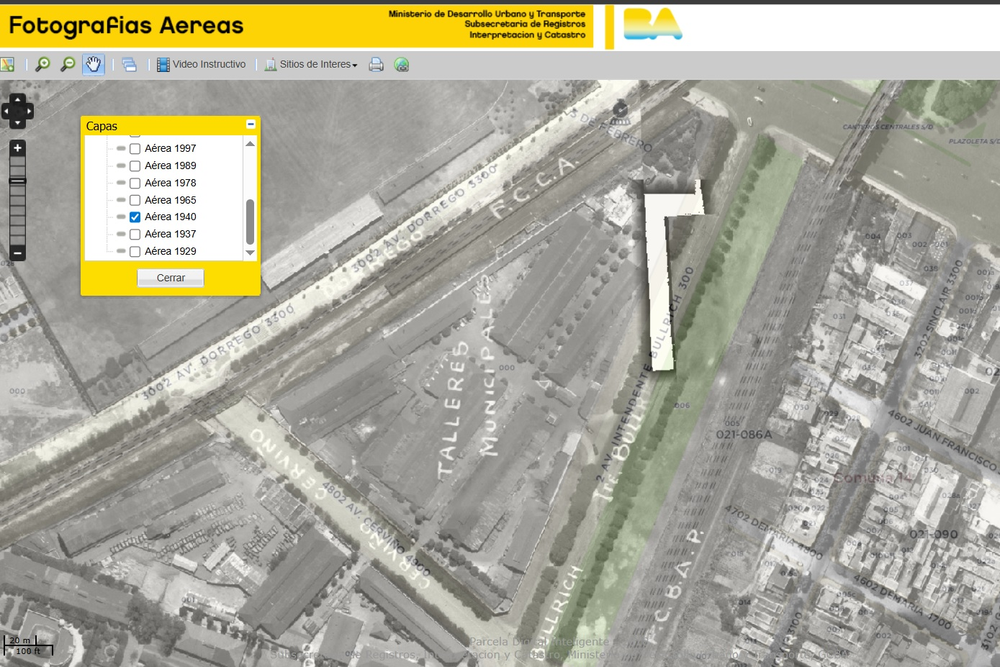
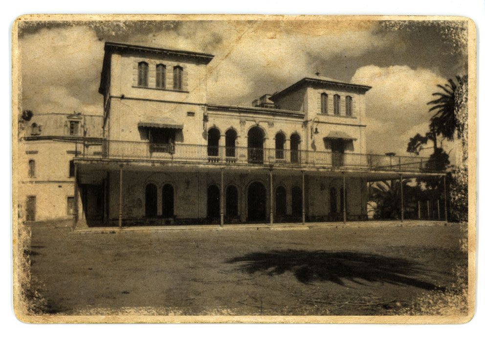
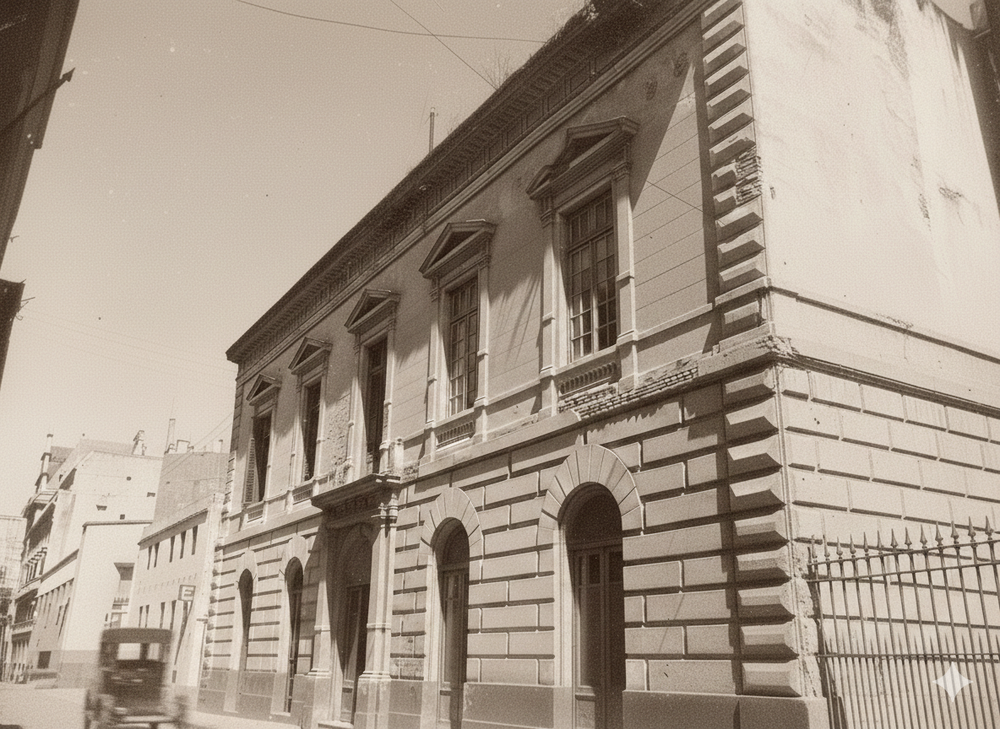
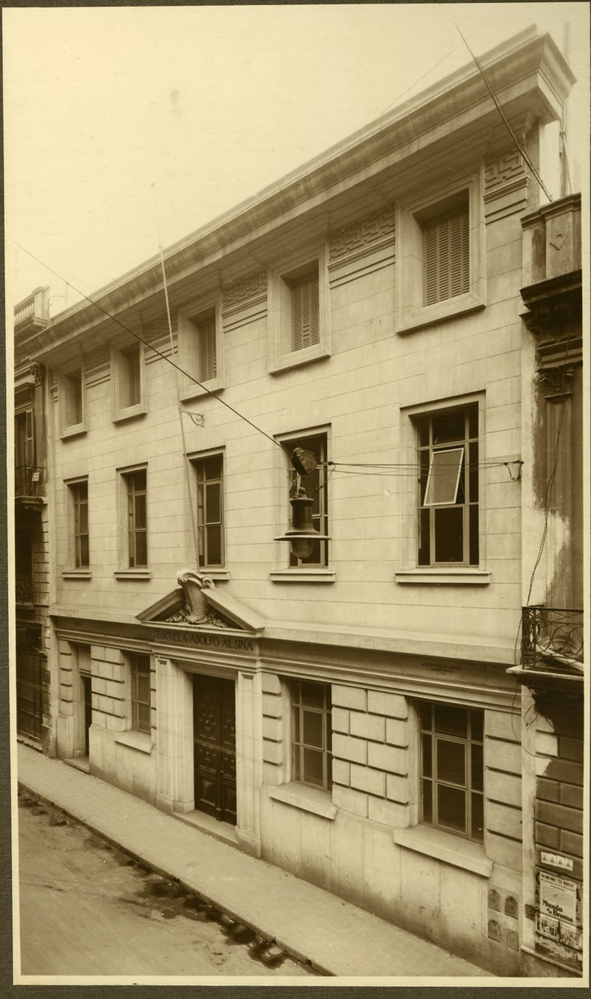

Historia Institucional
Un recorrido histórico por los orígenes, transformaciones y consolidación de la Escuela Politécnica Manuel Belgrano como institución técnica de referencia.
Orígenes: Escuela de Aprendices (1942)
La institución fue creada en 1942 como Escuela de Aprendices Manuel Belgrano.
La formación teórica se desarrollaba en el predio del actual Parque Avellaneda, mientras que los talleres funcionaban en Bullrich 99 (Ciudad de Buenos Aires).
Esta etapa estuvo orientada a la formación técnica temprana, con fuerte énfasis en el aprendizaje práctico de oficios vinculados al desarrollo industrial argentino.

Talleres Municipales 1940 - PalermoLa Casona de los Olivera y el entorno histórico
La institución funcionó inicialmente en el entorno del actual Parque Avellaneda, espacio vinculado históricamente a la antigua chacra “Los Remedios”.
Este entorno aportó identidad y valor simbólico a los inicios de la escuela, vinculando educación técnica con patrimonio histórico.

Casona Olivera histórica - Parque AvellanedaCierre institucional (1976)
En 1976 la escuela fue cerrada por decreto del Intendente Brigadier Osvaldo Cacciatore, durante el período de la última dictadura militar.
Esta medida interrumpió el funcionamiento histórico de la institución, marcando una etapa de discontinuidad en su trayectoria educativa.
 Período de interrupción institucional
Período de interrupción institucional
Reapertura democrática (1983)
Con el retorno de la democracia en 1983, la institución reabre como Escuela Municipal Politécnica Manuel Belgrano.
Los talleres centrales funcionaron en Uspallata y Lavardén, dependientes de la DAOM.
Reorganización institucional en los años 80
Moreno 330 (1984)
En 1984 la escuela se instala en el edificio ubicado en Moreno 330, dentro del casco histórico de la Ciudad de Buenos Aires.
Este inmueble posee alto valor patrimonial, ya que anteriormente fue sede del primer Laboratorio Municipal de Química.

Edificio histórico de Moreno 330Bolívar 346 (1988): Consolidación institucional
En 1988 la institución adopta oficialmente el nombre Escuela Politécnica Manuel Belgrano, estableciéndose en su sede actual en Bolívar 346.
Esta etapa consolidó su identidad dentro del sistema de educación técnica de la Ciudad de Buenos Aires.

Entorno histórico de la actual sedeResumen Cronológico
- 1942: Creación como Escuela de Aprendices Manuel Belgrano
- 1976: Cierre decretado por el Intendente Brigadier Osvaldo Cacciatore
- 1983: Reapertura como Escuela Municipal Politécnica Manuel Belgrano
- 1984: Funcionamiento en Moreno 330
- 1988: Traslado definitivo a Bolívar 346
La Escuela Hoy
Actualmente, la Escuela Politécnica Manuel Belgrano se posiciona como una institución técnica de referencia en la Ciudad de Buenos Aires.
- ⚙️ Electromecánica
- 🚗 Automotores
- 💡 Electrónica
Su propuesta educativa combina formación teórica, práctica en talleres y actualización tecnológica constante.